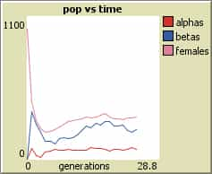

It is August 13, the temperature is 28 degrees Celsius, there is not a cloud in the sky. About 10 meteres beneath me, beautiful, half-naked Croatian girls immerse themselves in the shadow of my beach house. My brothers and I are pretty much royalty here. As I sit here relaxing, Johnny Cola in hand, cigar blowing gently in the breeze, I wonder: how is it that despite the exceptional gamut of beautiful women in my city, there is still a clear difference in quality between the women who bathe on this side of Biograd, and those who chat up the tourists on the riva?
As a Canadian ex-pat, this wasn’t obvious to me until well after several months into my stay. My neighbors and I enjoy a constant stream of 9s and 10s, yet even the very comparable 8.9s just never make it through our gates. More interestingly, of all the 8.0-8.9s that we know are clamoring to get near us, few if any of them are fucking the guys on the other side of town, and would rather camp on the beach in front of our house. Their beta orbiters remain unfucked and despondent. Much as the men of Romania in Roosh’s “Poosy Paradise,” my poorer compatriots can’t help but complain that all women really want are rich and handsome men.
I knew this kind of thing couldn’t be understood with simple linear mathematics. So I decided to construct a computer simulation to uncover the secrets of this inherently strange phenomenon. I set out to devise an agent-based model, which is a simple computer simulation comprised of programmable “objects,” and then change things such as the wealth distribution and ecological state of the “environment” in the simulation. My hypothesis? Simple: as I adjusted the freedom of women to choose their mating partners, they would rapidly and aggressively seek out the men with the greatest social status. I also hypothesized that this would come at the expense of long-run social utility.
The interesting thing about agent-based models is that all you do is start with a few simple rules, hit “Go,” and watch as the objects collide and interact. They’re very easy to learn. Unlike regular mathematical models, these simulations generate outcomes which are highly unanticipated, where small differences in initial configurations can lead to dramatically divergent global properties. The only way to test your hypothesis is to press play and watch your simulated reality unfold. So I endowed my “agents” with a few simple albeit realistic rules, and I watched as hell broke loose:
Dominant Rule: If female (pink), seek out highest-value male (blue) in vicinity, attempt to initiate relationship. If rejected, move to next available space, rinse and repeat. Only stop when every other agent is currently in a relationship.
Dominant Parameter: “Hypergamy,” or the extent to which a female agent’s vicinity is defined. As the hypergamy scale increases, her ability to jump from patch to patch in order to seek relatively higher males expands. This is to say that a higher value of hypergamy, due perhaps to technologies, such as internet dating and mobile phones, or political freedoms such as divorce without legal recourse, leads to a better “search” algorithm, so that the female is no longer trapped to males in her vicinity. At the highest levels of this parameter, she is essentially limitless in her options.
The result? In a world where hypergamy is high (right screen), the society’s resources are almost completely annihilated, as men allocate most of their assets to consumption in a sad attempt to satisfy choosy women (resulting also in overpopulation). In a world where hypergamy is low (left screen), the society’s resources are more equally distributed, vast reserves of wealth (savings) pocket the landscape, and population growth hovers at a sustainable level.
Why is this all happening? Well, to be blunt, women, when given too much freedom, cause society to become volatile and thus unsustainable. This is why many cultures, and especially those living in marginal desert communities (where a single fuck-up can spell the doom of an entire tribe), practice things like clitoral circumcision, concealment of the body, betrothal, and a whole host of other customs which prevent poor behaviors.
|  |
In my own attempt at affecting positive change, I have begun to bring less attractive girls to my beach and fucking them (occasionally), and allowing them to smoke cigarettes from my third floor balcony for all to see, so that the hotter girls get the picture that they are absolutely unimportant in my eyes. I have lots of money and land, so what do I care; if they can’t cook and look after kids, they’re all the same to me. Either way, as the simulation showed, the hot ones will always be clawing at our gate, eagerly awaiting their time in the sun.
My native Croatian neighbors, not yet satisfied by the luxury that is cheap North American tourist whores (and the increasingly Westernized Croatian women that follow), scoff at me, but they don’t see how they are pandering to a culture which validates women’s feeble social preferences over more stable and fulfilling qualities like connection, family, and integrity. Even my computer can see that as long as this behavior is encouraged, society will grow technologically, materially, and spiritually stagnant.
Read More: Hypergamy Unchained
{kind=link}
{kind=link}
{kind=link}
{kind=link}
{kind=link}
{kind=link}